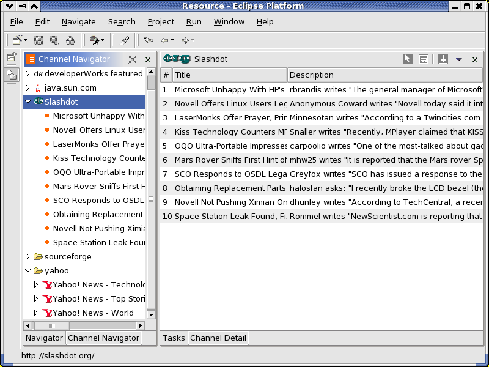
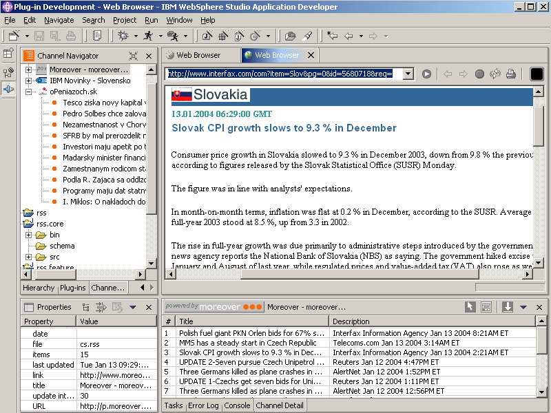
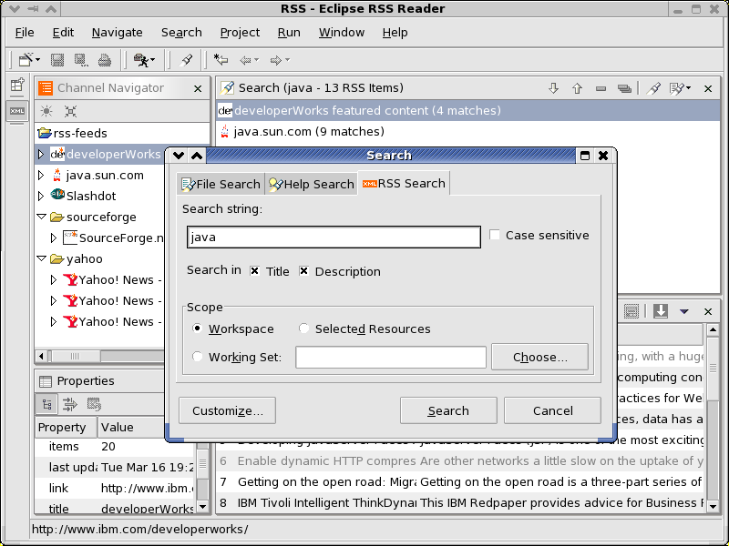

Screenshots
Everybody likes them, so here they are:

1. Channel Navigator and Detail views showing read and unread items.

2. Using text input dialog to search through Slashdot stories. In the background, reading a story in WSAD's embedded Web Browser.

3. Searching through RSS Channels.